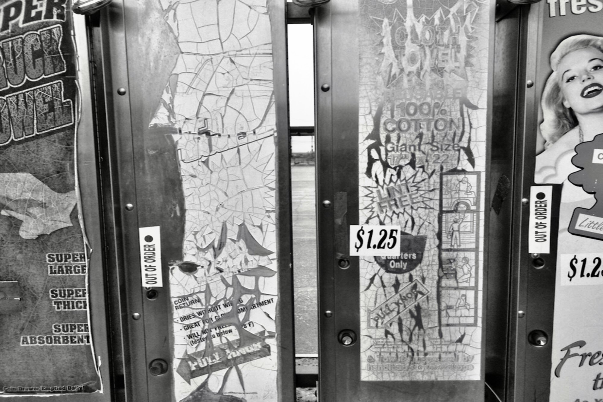

Getting what you want doesn't mean you've won. (Photo by author.)
What if somebody told you that the road you're on led nowhere—before you got to the point of no turning back?
What if somebody showed you that you're making a big mistake—while you still had time to do something about it?
What if somebody gave you a glimpse, a hint, a moment of clarity—before you got stuck in a life that you hate?
Would you do things differently?
Would you slow down?
Would you listen?
Would you think twice?
Here's a clue.
Sometimes—maybe all the time, I don't know—
the destination isn't what you dream,
the consequences aren't what you imagine,
the payoff isn't anything like the promise,
the true cost is a lot more than the price on the sticker,
a hard road hides behind an easy first step,
rust sticks around a lot longer than glitter,
getting what you want doesn't mean you've won,
every betrayal starts with a kiss,
and new things grow old faster than you ever thought possible.
Maybe I'm full of s***. You decide.
I'm twenty eight now, but I was seventeen once too. I thought I knew better then. Now I do.
Is this what is meant by coming full circle? Or trying to pay it forward? Or am I just kidding myself, because that's less painful that admitting that there is no hope at all, ever, anywhere.
I'm trying to tell you something, and I know you don't want to hear it. But I'm going to try anyway. I'm going to tell you something that will change your life if you'll give it half a chance.
I know you don't have to listen to me. I stopped listening as soon as I saw that I didn't have to anymore, not that anybody was saying anything meaningful anyway.
Maybe that's what makes this different. Maybe I have something to say that will help you avoid making the same mistakes I made, learning lessons the hard way, wishing every moment of every day that things were different.
Maybe I'm full of s***. You decide.
These are your choices, and they will have consequences. No getting out of that.
There's one last question that has to be asked, sooner or later. It may not make sense at the moment, but someday it will.
What would you give to get your innocence back?
There's one last question that has to be asked. (Photo by author.)